| Matrix name | Aligned logos | cor |
Ncor |
logoDP |
NIcor |
NsEucl |
SSD |
NSW |
rcor |
rNcor |
rlogoDP |
rNIcor |
rNsEucl |
rSSD |
rNSW |
rank_mean |
match_rank |
Aligned matrices |
|---|
| positions_7nt_m2_shift4 (positions_7nt_m2) |
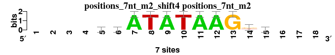 |
|
|
|
|
|
|
|
|
|
|
|
|
|
|
|
|
; positions_7nt_m2; m=0 (reference); ncol1=11; shift=4; ncol=18; ----wwATATAAGkb---
; Alignment reference
a 0 0 0 0 2 3 7 0 7 0 7 7 0 0 1 0 0 0
c 0 0 0 0 1 1 0 0 0 0 0 0 0 1 2 0 0 0
g 0 0 0 0 1 1 0 0 0 0 0 0 7 3 2 0 0 0
t 0 0 0 0 3 2 0 7 0 7 0 0 0 3 2 0 0 0
|
| 2613_MA0379.1_JASPAR_CORE_2009__shift6 (2613_MA0379.1_JASPAR_CORE_2009_) |
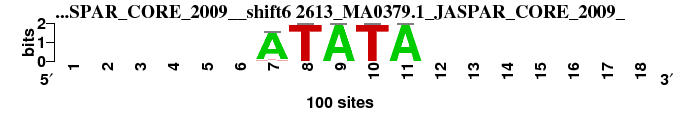 |
0.999 |
0.454 |
9.094 |
0.454 |
0.988 |
0.008 |
0.999 |
1 |
11 |
2 |
6 |
1 |
1 |
1 |
3.286 |
1 |
; positions_7nt_m2 versus 2613_MA0379.1_JASPAR_CORE_2009_; m=1/21; ncol2=5; w=5; offset=2; strand=D; shift=6; score= 3.2857; ------ATATA-------
; cor=0.999; Ncor=0.454; logoDP=9.094; NIcor=0.454; NsEucl=0.988; SSD=0.008; NSW=0.999; rcor=1; rNcor=11; rlogoDP=2; rNIcor=6; rNsEucl=1; rSSD=1; rNSW=1; rank_mean=3.286; match_rank=1
a 0 0 0 0 0 0 93 0 99 0 99 0 0 0 0 0 0 0
c 0 0 0 0 0 0 2 0 0 0 0 0 0 0 0 0 0 0
g 0 0 0 0 0 0 0 0 0 0 0 0 0 0 0 0 0 0
t 0 0 0 0 0 0 5 99 0 99 0 0 0 0 0 0 0 0
|
| 6327_1tgh_A_3D-footprint_20130124__shift3 (6327_1tgh_A_3D-footprint_20130124_) |
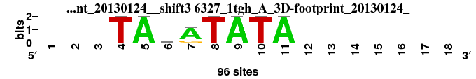 |
0.890 |
0.519 |
8.646 |
0.505 |
0.905 |
0.890 |
0.936 |
3 |
7 |
5 |
4 |
3 |
3 |
3 |
4.000 |
2 |
; positions_7nt_m2 versus 6327_1tgh_A_3D-footprint_20130124_; m=2/21; ncol2=8; w=7; offset=-1; strand=D; shift=3; score= 4; ---TAtATATA-------
; cor=0.890; Ncor=0.519; logoDP=8.646; NIcor=0.505; NsEucl=0.905; SSD=0.890; NSW=0.936; rcor=3; rNcor=7; rlogoDP=5; rNIcor=4; rNsEucl=3; rSSD=3; rNSW=3; rank_mean=4.000; match_rank=2
a 0 0 0 0 96 19 76 0 96 0 96 0 0 0 0 0 0 0
c 0 0 0 0 0 19 0 0 0 0 0 0 0 0 0 0 0 0
g 0 0 0 0 0 20 19 0 0 0 0 0 0 0 0 0 0 0
t 0 0 0 96 0 38 1 96 0 96 0 0 0 0 0 0 0 0
|
| 6272_1qn7_A_3D-footprint_20130124__rc_shift5 (6272_1qn7_A_3D-footprint_20130124__rc) |
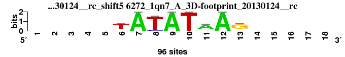 |
0.947 |
0.689 |
5.800 |
0.285 |
0.935 |
0.545 |
0.966 |
2 |
1 |
10 |
11 |
2 |
2 |
2 |
4.286 |
3 |
; positions_7nt_m2 versus 6272_1qn7_A_3D-footprint_20130124__rc; m=3/21; ncol2=8; w=8; offset=1; strand=R; shift=5; score= 4.2857; -----TATATAAG-----
; cor=0.947; Ncor=0.689; logoDP=5.800; NIcor=0.285; NsEucl=0.935; SSD=0.545; NSW=0.966; rcor=2; rNcor=1; rlogoDP=10; rNIcor=11; rNsEucl=2; rSSD=2; rNSW=2; rank_mean=4.286; match_rank=3
a 0 0 0 0 0 8 96 0 96 0 69 96 8 0 0 0 0 0
c 0 0 0 0 0 8 0 8 0 0 8 0 8 0 0 0 0 0
g 0 0 0 0 0 8 0 0 0 0 11 0 72 0 0 0 0 0
t 0 0 0 0 0 72 0 88 0 96 8 0 8 0 0 0 0 0
|
| 2427_MA0033.1_JASPAR_CORE_2009__shift3 (2427_MA0033.1_JASPAR_CORE_2009_) |
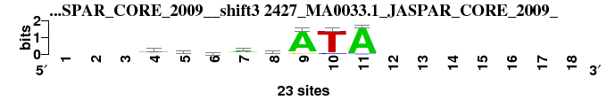 |
0.854 |
0.498 |
4.621 |
0.481 |
0.895 |
1.090 |
0.922 |
4 |
8 |
11 |
5 |
4 |
4 |
4 |
5.714 |
4 |
; positions_7nt_m2 versus 2427_MA0033.1_JASPAR_CORE_2009_; m=4/21; ncol2=8; w=7; offset=-1; strand=D; shift=3; score= 5.7143; ---wwdayATA-------
; cor=0.854; Ncor=0.498; logoDP=4.621; NIcor=0.481; NsEucl=0.895; SSD=1.090; NSW=0.922; rcor=4; rNcor=8; rlogoDP=11; rNIcor=5; rNsEucl=4; rSSD=4; rNSW=4; rank_mean=5.714; match_rank=4
a 0 0 0 7 10 6 13 4 21 0 22 0 0 0 0 0 0 0
c 0 0 0 1 4 3 4 10 0 2 1 0 0 0 0 0 0 0
g 0 0 0 4 2 6 4 2 2 0 0 0 0 0 0 0 0 0
t 0 0 0 11 7 8 2 7 0 21 0 0 0 0 0 0 0 0
|
| 6359_1ytf_A_3D-footprint_20130124__shift1 (6359_1ytf_A_3D-footprint_20130124_) |
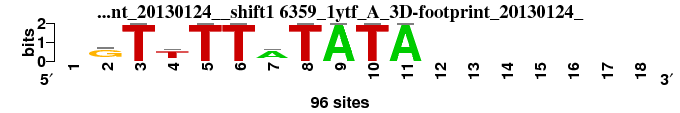 |
0.853 |
0.427 |
8.224 |
0.397 |
0.885 |
1.306 |
0.907 |
5 |
12 |
6 |
8 |
9 |
6 |
6 |
7.429 |
5 |
; positions_7nt_m2 versus 6359_1ytf_A_3D-footprint_20130124_; m=5/21; ncol2=10; w=7; offset=-3; strand=D; shift=1; score= 7.4286; -GTTTTATATA-------
; cor=0.853; Ncor=0.427; logoDP=8.224; NIcor=0.397; NsEucl=0.885; SSD=1.306; NSW=0.907; rcor=5; rNcor=12; rlogoDP=6; rNIcor=8; rNsEucl=9; rSSD=6; rNSW=6; rank_mean=7.429; match_rank=5
a 0 9 0 11 0 0 67 0 96 0 96 0 0 0 0 0 0 0
c 0 9 0 9 0 0 9 0 0 0 0 0 0 0 0 0 0 0
g 0 69 0 9 0 0 11 0 0 0 0 0 0 0 0 0 0 0
t 0 9 96 67 96 96 9 96 0 96 0 0 0 0 0 0 0 0
|
| 6360_1ytf_AC_3D-footprint_20130124__shift1 (6360_1ytf_AC_3D-footprint_20130124_) |
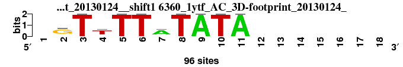 |
0.853 |
0.427 |
8.224 |
0.397 |
0.885 |
1.306 |
0.907 |
5 |
12 |
6 |
8 |
9 |
6 |
6 |
7.429 |
6 |
; positions_7nt_m2 versus 6360_1ytf_AC_3D-footprint_20130124_; m=6/21; ncol2=10; w=7; offset=-3; strand=D; shift=1; score= 7.4286; -GTTTTATATA-------
; cor=0.853; Ncor=0.427; logoDP=8.224; NIcor=0.397; NsEucl=0.885; SSD=1.306; NSW=0.907; rcor=5; rNcor=12; rlogoDP=6; rNIcor=8; rNsEucl=9; rSSD=6; rNSW=6; rank_mean=7.429; match_rank=6
a 0 9 0 9 0 0 67 0 96 0 96 0 0 0 0 0 0 0
c 0 9 0 9 0 0 9 0 0 0 0 0 0 0 0 0 0 0
g 0 69 0 11 0 0 11 0 0 0 0 0 0 0 0 0 0 0
t 0 9 96 67 96 96 9 96 0 96 0 0 0 0 0 0 0 0
|
| 6725_4aik_A_3D-footprint_20130124__shift5 (6725_4aik_A_3D-footprint_20130124_) |
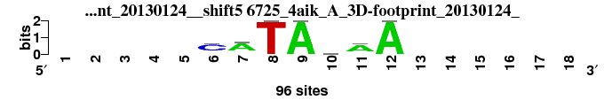 |
0.829 |
0.528 |
6.685 |
0.509 |
0.879 |
1.423 |
0.898 |
8 |
6 |
9 |
3 |
11 |
10 |
8 |
7.857 |
7 |
; positions_7nt_m2 versus 6725_4aik_A_3D-footprint_20130124_; m=7/21; ncol2=7; w=7; offset=1; strand=D; shift=5; score= 7.8571; -----CATAnAA------
; cor=0.829; Ncor=0.528; logoDP=6.685; NIcor=0.509; NsEucl=0.879; SSD=1.423; NSW=0.898; rcor=8; rNcor=6; rlogoDP=9; rNIcor=3; rNsEucl=11; rSSD=10; rNSW=8; rank_mean=7.857; match_rank=7
a 0 0 0 0 0 11 69 0 96 24 67 96 0 0 0 0 0 0
c 0 0 0 0 0 67 9 0 0 24 11 0 0 0 0 0 0 0
g 0 0 0 0 0 9 9 0 0 24 9 0 0 0 0 0 0 0
t 0 0 0 0 0 9 9 96 0 24 9 0 0 0 0 0 0 0
|
| 2713_PF0026.1_JASPAR_CORE_2009__shift4 (2713_PF0026.1_JASPAR_CORE_2009_) |
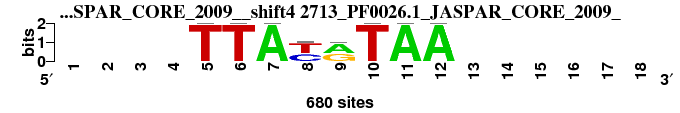 |
0.799 |
0.581 |
8.896 |
0.530 |
0.877 |
1.940 |
0.879 |
12 |
3 |
4 |
1 |
14 |
16 |
14 |
9.143 |
8 |
; positions_7nt_m2 versus 2713_PF0026.1_JASPAR_CORE_2009_; m=8/21; ncol2=8; w=8; offset=0; strand=D; shift=4; score= 9.1429; ----TTAyrTAA------
; cor=0.799; Ncor=0.581; logoDP=8.896; NIcor=0.530; NsEucl=0.877; SSD=1.940; NSW=0.879; rcor=12; rNcor=3; rlogoDP=4; rNIcor=1; rNsEucl=14; rSSD=16; rNSW=14; rank_mean=9.143; match_rank=8
a 0 0 0 0 0 0 680 0 375 0 680 680 0 0 0 0 0 0
c 0 0 0 0 0 0 0 286 0 0 0 0 0 0 0 0 0 0
g 0 0 0 0 0 0 0 0 305 0 0 0 0 0 0 0 0 0
t 0 0 0 0 680 680 0 394 0 680 0 0 0 0 0 0 0 0
|
| 6276_1qnb_A_3D-footprint_20130124__rc_shift7 (6276_1qnb_A_3D-footprint_20130124__rc) |
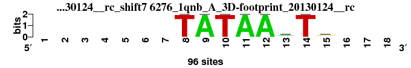 |
0.818 |
0.595 |
2.306 |
0.010 |
0.885 |
1.698 |
0.894 |
9 |
2 |
14 |
16 |
7 |
13 |
10 |
10.143 |
9 |
; positions_7nt_m2 versus 6276_1qnb_A_3D-footprint_20130124__rc; m=9/21; ncol2=8; w=8; offset=3; strand=R; shift=7; score=10.1429; -------TATAAmTs---
; cor=0.818; Ncor=0.595; logoDP=2.306; NIcor=0.010; NsEucl=0.885; SSD=1.698; NSW=0.894; rcor=9; rNcor=2; rlogoDP=14; rNIcor=16; rNsEucl=7; rSSD=13; rNSW=10; rank_mean=10.143; match_rank=9
a 0 0 0 0 0 0 0 0 96 0 96 96 48 0 12 0 0 0
c 0 0 0 0 0 0 0 0 0 0 0 0 24 0 24 0 0 0
g 0 0 0 0 0 0 0 0 0 0 0 0 12 0 48 0 0 0
t 0 0 0 0 0 0 0 96 0 96 0 0 12 96 12 0 0 0
|
| 6246_1osl_A_3D-footprint_20130124__rc_shift8 (6246_1osl_A_3D-footprint_20130124__rc) |
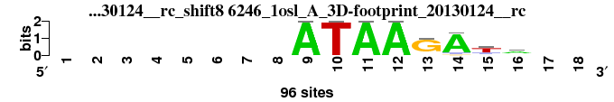 |
0.839 |
0.489 |
0.367 |
-0.142 |
0.885 |
1.302 |
0.907 |
7 |
9 |
20 |
20 |
8 |
5 |
5 |
10.571 |
10 |
; positions_7nt_m2 versus 6246_1osl_A_3D-footprint_20130124__rc; m=10/21; ncol2=8; w=7; offset=4; strand=R; shift=8; score=10.5714; --------ATAAGAta--
; cor=0.839; Ncor=0.489; logoDP=0.367; NIcor=-0.142; NsEucl=0.885; SSD=1.302; NSW=0.907; rcor=7; rNcor=9; rlogoDP=20; rNIcor=20; rNsEucl=8; rSSD=5; rNSW=5; rank_mean=10.571; match_rank=10
a 0 0 0 0 0 0 0 0 96 0 96 96 6 84 6 54 0 0
c 0 0 0 0 0 0 0 0 0 0 0 0 6 6 16 16 0 0
g 0 0 0 0 0 0 0 0 0 0 0 0 78 6 13 13 0 0
t 0 0 0 0 0 0 0 0 0 96 0 0 6 0 61 13 0 0
|
| 2814_PF0127.1_JASPAR_CORE_2009__shift7 (2814_PF0127.1_JASPAR_CORE_2009_) |
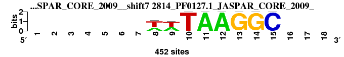 |
0.783 |
0.570 |
9.022 |
0.518 |
0.872 |
2.109 |
0.868 |
14 |
5 |
3 |
2 |
15 |
18 |
17 |
10.571 |
11 |
; positions_7nt_m2 versus 2814_PF0127.1_JASPAR_CORE_2009_; m=11/21; ncol2=8; w=8; offset=3; strand=D; shift=7; score=10.5714; -------wwTAAGGC---
; cor=0.783; Ncor=0.570; logoDP=9.022; NIcor=0.518; NsEucl=0.872; SSD=2.109; NSW=0.868; rcor=14; rNcor=5; rlogoDP=3; rNIcor=2; rNsEucl=15; rSSD=18; rNSW=17; rank_mean=10.571; match_rank=11
a 0 0 0 0 0 0 0 156 195 0 452 452 0 0 0 0 0 0
c 0 0 0 0 0 0 0 0 0 0 0 0 0 0 452 0 0 0
g 0 0 0 0 0 0 0 0 0 0 0 0 452 452 0 0 0 0
t 0 0 0 0 0 0 0 296 257 452 0 0 0 0 0 0 0 0
|
| 6724_4aij_AB_3D-footprint_20130124__rc_shift7 (6724_4aij_AB_3D-footprint_20130124__rc) |
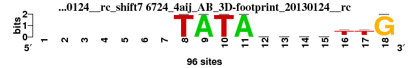 |
0.803 |
0.401 |
1.286 |
0.138 |
0.886 |
1.653 |
0.897 |
11 |
21 |
17 |
14 |
6 |
12 |
9 |
12.857 |
12 |
; positions_7nt_m2 versus 6724_4aij_AB_3D-footprint_20130124__rc; m=12/21; ncol2=13; w=8; offset=3; strand=R; shift=7; score=12.8571; -------TATAnnnnTTG
; cor=0.803; Ncor=0.401; logoDP=1.286; NIcor=0.138; NsEucl=0.886; SSD=1.653; NSW=0.897; rcor=11; rNcor=21; rlogoDP=17; rNIcor=14; rNsEucl=6; rSSD=12; rNSW=9; rank_mean=12.857; match_rank=12
a 0 0 0 0 0 0 0 0 96 0 96 24 24 24 24 9 9 0
c 0 0 0 0 0 0 0 0 0 0 0 24 24 24 24 11 9 0
g 0 0 0 0 0 0 0 0 0 0 0 24 24 24 24 9 11 96
t 0 0 0 0 0 0 0 96 0 96 0 24 24 24 24 67 67 0
|
| 2595_MA0356.1_JASPAR_CORE_2009__rc_shift4 (2595_MA0356.1_JASPAR_CORE_2009__rc) |
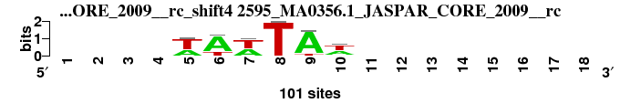 |
0.769 |
0.419 |
3.043 |
0.146 |
0.865 |
1.311 |
0.891 |
17 |
16 |
13 |
13 |
17 |
8 |
11 |
13.571 |
13 |
; positions_7nt_m2 versus 2595_MA0356.1_JASPAR_CORE_2009__rc; m=13/21; ncol2=6; w=6; offset=0; strand=R; shift=4; score=13.5714; ----wAwTAw--------
; cor=0.769; Ncor=0.419; logoDP=3.043; NIcor=0.146; NsEucl=0.865; SSD=1.311; NSW=0.891; rcor=17; rNcor=16; rlogoDP=13; rNIcor=13; rNsEucl=17; rSSD=8; rNSW=11; rank_mean=13.571; match_rank=13
a 0 0 0 0 37 77 44 0 88 41 0 0 0 0 0 0 0 0
c 0 0 0 0 0 0 0 0 0 8 0 0 0 0 0 0 0 0
g 0 0 0 0 0 0 0 0 0 0 0 0 0 0 0 0 0 0
t 0 0 0 0 63 23 56 100 12 52 0 0 0 0 0 0 0 0
|
| 6270_1qn5_A_3D-footprint_20130124__rc_shift7 (6270_1qn5_A_3D-footprint_20130124__rc) |
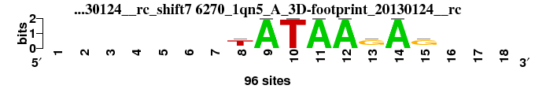 |
0.797 |
0.580 |
0.345 |
-0.179 |
0.879 |
1.870 |
0.883 |
13 |
4 |
21 |
21 |
12 |
14 |
12 |
13.857 |
14 |
; positions_7nt_m2 versus 6270_1qn5_A_3D-footprint_20130124__rc; m=14/21; ncol2=8; w=8; offset=3; strand=R; shift=7; score=13.8571; -------TATAAGAG---
; cor=0.797; Ncor=0.580; logoDP=0.345; NIcor=-0.179; NsEucl=0.879; SSD=1.870; NSW=0.883; rcor=13; rNcor=4; rlogoDP=21; rNIcor=21; rNsEucl=12; rSSD=14; rNSW=12; rank_mean=13.857; match_rank=14
a 0 0 0 0 0 0 0 9 96 0 96 96 9 96 9 0 0 0
c 0 0 0 0 0 0 0 9 0 0 0 0 11 0 9 0 0 0
g 0 0 0 0 0 0 0 11 0 0 0 0 67 0 67 0 0 0
t 0 0 0 0 0 0 0 67 0 96 0 0 9 0 11 0 0 0
|
| 2738_PF0051.1_JASPAR_CORE_2009__shift7 (2738_PF0051.1_JASPAR_CORE_2009_) |
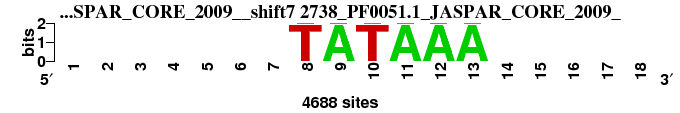 |
0.778 |
0.424 |
9.609 |
0.424 |
0.833 |
2.000 |
0.833 |
16 |
15 |
1 |
7 |
21 |
17 |
21 |
14.000 |
15 |
; positions_7nt_m2 versus 2738_PF0051.1_JASPAR_CORE_2009_; m=15/21; ncol2=6; w=6; offset=3; strand=D; shift=7; score= 14; -------TATAAA-----
; cor=0.778; Ncor=0.424; logoDP=9.609; NIcor=0.424; NsEucl=0.833; SSD=2.000; NSW=0.833; rcor=16; rNcor=15; rlogoDP=1; rNIcor=7; rNsEucl=21; rSSD=17; rNSW=21; rank_mean=14.000; match_rank=15
a 0 0 0 0 0 0 0 0 4688 0 4688 4688 4688 0 0 0 0 0
c 0 0 0 0 0 0 0 0 0 0 0 0 0 0 0 0 0 0
g 0 0 0 0 0 0 0 0 0 0 0 0 0 0 0 0 0 0
t 0 0 0 0 0 0 0 4688 0 4688 0 0 0 0 0 0 0 0
|
| 2509_MA0124.1_JASPAR_CORE_2009__rc_shift9 (2509_MA0124.1_JASPAR_CORE_2009__rc) |
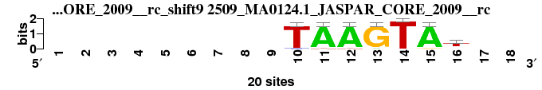 |
0.808 |
0.404 |
2.199 |
0.041 |
0.860 |
1.421 |
0.882 |
10 |
20 |
15 |
15 |
19 |
9 |
13 |
14.429 |
16 |
; positions_7nt_m2 versus 2509_MA0124.1_JASPAR_CORE_2009__rc; m=16/21; ncol2=7; w=6; offset=5; strand=R; shift=9; score=14.4286; ---------TAAGTAt--
; cor=0.808; Ncor=0.404; logoDP=2.199; NIcor=0.041; NsEucl=0.860; SSD=1.421; NSW=0.882; rcor=10; rNcor=20; rlogoDP=15; rNIcor=15; rNsEucl=19; rSSD=9; rNSW=13; rank_mean=14.429; match_rank=16
a 0 0 0 0 0 0 0 0 0 0 19 19 1 0 19 3 0 0
c 0 0 0 0 0 0 0 0 0 1 0 0 0 0 0 3 0 0
g 0 0 0 0 0 0 0 0 0 0 0 0 19 0 1 1 0 0
t 0 0 0 0 0 0 0 0 0 19 1 1 0 20 0 13 0 0
|
| 6236_1nvp_AC_3D-footprint_20130124__rc_shift1 (6236_1nvp_AC_3D-footprint_20130124__rc) |
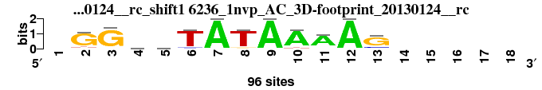 |
0.761 |
0.489 |
4.213 |
0.209 |
0.878 |
2.398 |
0.867 |
19 |
10 |
12 |
12 |
13 |
20 |
19 |
15.000 |
17 |
; positions_7nt_m2 versus 6236_1nvp_AC_3D-footprint_20130124__rc; m=17/21; ncol2=12; w=9; offset=-3; strand=R; shift=1; score= 15; -GGnnTATAAAAG-----
; cor=0.761; Ncor=0.489; logoDP=4.213; NIcor=0.209; NsEucl=0.878; SSD=2.398; NSW=0.867; rcor=19; rNcor=10; rlogoDP=12; rNIcor=12; rNsEucl=13; rSSD=20; rNSW=19; rank_mean=15.000; match_rank=17
a 0 6 3 24 24 3 96 3 96 84 76 96 3 0 0 0 0 0
c 0 3 3 24 24 6 0 3 0 3 7 0 15 0 0 0 0 0
g 0 80 87 24 24 3 0 6 0 3 7 0 72 0 0 0 0 0
t 0 7 3 24 24 84 0 84 0 6 6 0 6 0 0 0 0 0
|
| 6637_3jxb_CD_3D-footprint_20130124__rc_shift5 (6637_3jxb_CD_3D-footprint_20130124__rc) |
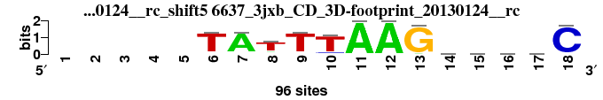 |
0.752 |
0.418 |
2.027 |
0.002 |
0.888 |
2.523 |
0.874 |
20 |
17 |
16 |
17 |
5 |
21 |
15 |
15.857 |
18 |
; positions_7nt_m2 versus 6637_3jxb_CD_3D-footprint_20130124__rc; m=18/21; ncol2=17; w=10; offset=1; strand=R; shift=5; score=15.8571; -----TATTTAAGnnnnC
; cor=0.752; Ncor=0.418; logoDP=2.027; NIcor=0.002; NsEucl=0.888; SSD=2.523; NSW=0.874; rcor=20; rNcor=17; rlogoDP=16; rNIcor=17; rNsEucl=5; rSSD=21; rNSW=15; rank_mean=15.857; match_rank=18
a 0 0 0 0 0 3 85 10 5 3 96 96 4 24 24 24 24 1
c 0 0 0 0 0 5 5 7 3 9 0 0 0 24 24 24 24 92
g 0 0 0 0 0 3 3 8 3 3 0 0 92 24 24 24 24 0
t 0 0 0 0 0 85 3 71 85 81 0 0 0 24 24 24 24 3
|
| 2715_PF0028.1_JASPAR_CORE_2009__shift2 (2715_PF0028.1_JASPAR_CORE_2009_) |
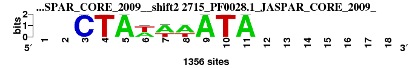 |
0.751 |
0.404 |
6.877 |
0.370 |
0.860 |
1.922 |
0.863 |
21 |
19 |
8 |
10 |
18 |
15 |
20 |
15.857 |
19 |
; positions_7nt_m2 versus 2715_PF0028.1_JASPAR_CORE_2009_; m=19/21; ncol2=9; w=7; offset=-2; strand=D; shift=2; score=15.8571; --CTAwwwATA-------
; cor=0.751; Ncor=0.404; logoDP=6.877; NIcor=0.370; NsEucl=0.860; SSD=1.922; NSW=0.863; rcor=21; rNcor=19; rlogoDP=8; rNIcor=10; rNsEucl=18; rSSD=15; rNSW=20; rank_mean=15.857; match_rank=19
a 0 0 0 0 1356 605 896 881 1356 0 1356 0 0 0 0 0 0 0
c 0 0 1356 0 0 0 0 0 0 0 0 0 0 0 0 0 0 0
g 0 0 0 0 0 0 0 0 0 0 0 0 0 0 0 0 0 0
t 0 0 0 1356 0 751 460 475 0 1356 0 0 0 0 0 0 0 0
|
| 6434_2h7h_A_3D-footprint_20130124__rc_shift8 (6434_2h7h_A_3D-footprint_20130124__rc) |
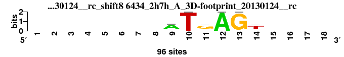 |
0.779 |
0.425 |
0.553 |
-0.053 |
0.852 |
1.576 |
0.869 |
15 |
14 |
19 |
19 |
20 |
11 |
16 |
16.286 |
20 |
; positions_7nt_m2 versus 6434_2h7h_A_3D-footprint_20130124__rc; m=20/21; ncol2=6; w=6; offset=4; strand=R; shift=8; score=16.2857; --------ATGAGT----
; cor=0.779; Ncor=0.425; logoDP=0.553; NIcor=-0.053; NsEucl=0.852; SSD=1.576; NSW=0.869; rcor=15; rNcor=14; rlogoDP=19; rNIcor=19; rNsEucl=20; rSSD=11; rNSW=16; rank_mean=16.286; match_rank=20
a 0 0 0 0 0 0 0 0 69 0 11 96 0 9 0 0 0 0
c 0 0 0 0 0 0 0 0 9 0 9 0 0 9 0 0 0 0
g 0 0 0 0 0 0 0 0 9 0 67 0 96 11 0 0 0 0
t 0 0 0 0 0 0 0 0 9 96 9 0 0 67 0 0 0 0
|
| 6358_1ytb_A_3D-footprint_20130124__rc_shift0 (6358_1ytb_A_3D-footprint_20130124__rc) |
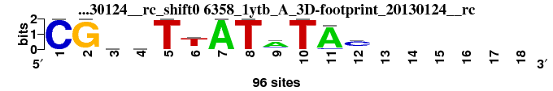 |
0.766 |
0.409 |
0.658 |
-0.044 |
0.872 |
2.110 |
0.868 |
18 |
18 |
18 |
18 |
16 |
19 |
18 |
17.857 |
21 |
; positions_7nt_m2 versus 6358_1ytb_A_3D-footprint_20130124__rc; m=21/21; ncol2=12; w=8; offset=-4; strand=R; shift=0; score=17.8571; CGnnTTATaTAc------
; cor=0.766; Ncor=0.409; logoDP=0.658; NIcor=-0.044; NsEucl=0.872; SSD=2.110; NSW=0.868; rcor=18; rNcor=18; rlogoDP=18; rNIcor=18; rNsEucl=16; rSSD=19; rNSW=18; rank_mean=17.857; match_rank=21
a 0 0 24 24 0 8 96 0 64 0 88 16 0 0 0 0 0 0
c 96 0 24 24 0 8 0 0 16 0 8 64 0 0 0 0 0 0
g 0 96 24 24 0 8 0 0 8 0 0 8 0 0 0 0 0 0
t 0 0 24 24 96 72 0 96 8 96 0 8 0 0 0 0 0 0
|
{kind=link}
{kind=link}
{kind=link}
{kind=link}
{kind=link}
{kind=link}
{kind=link}
{kind=link}
{kind=link}
{kind=link}
{kind=link}
{kind=link}
{kind=link}
{kind=link}
{kind=link}
{kind=link}
{kind=link}
{kind=link}
{kind=link}
{kind=link}
{kind=link}
{kind=link}